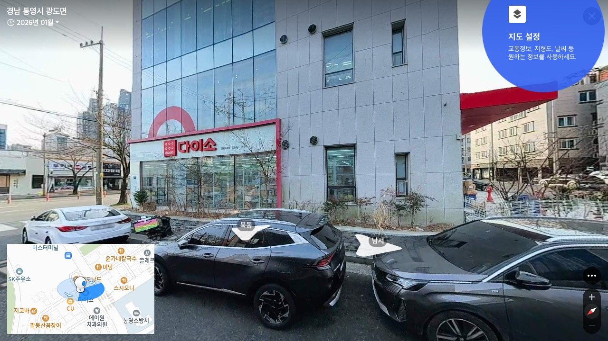
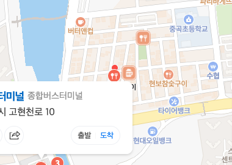
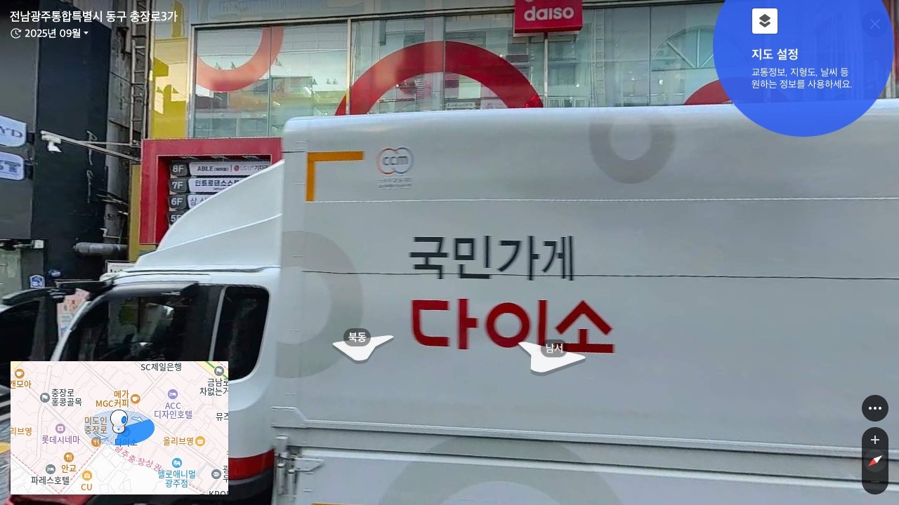
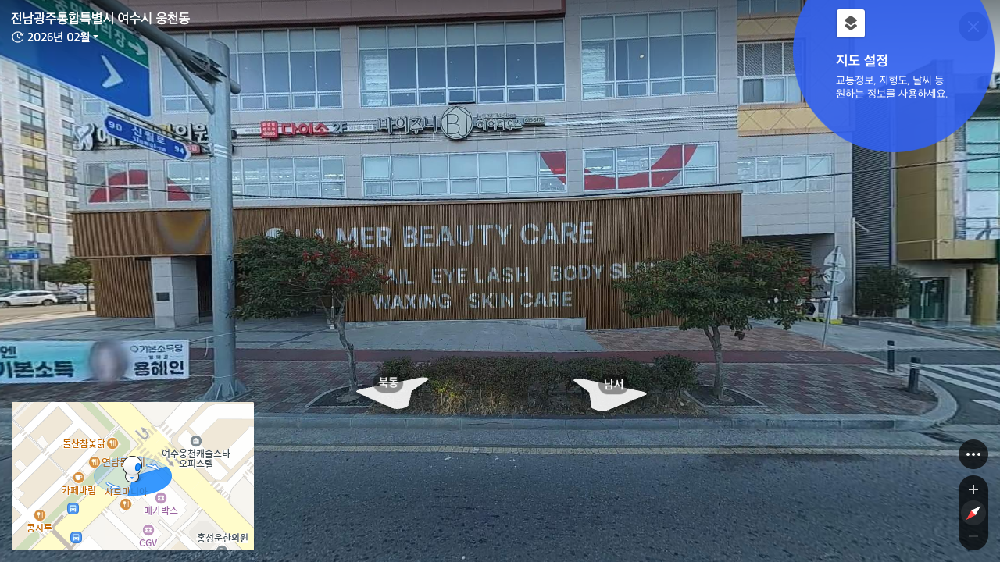
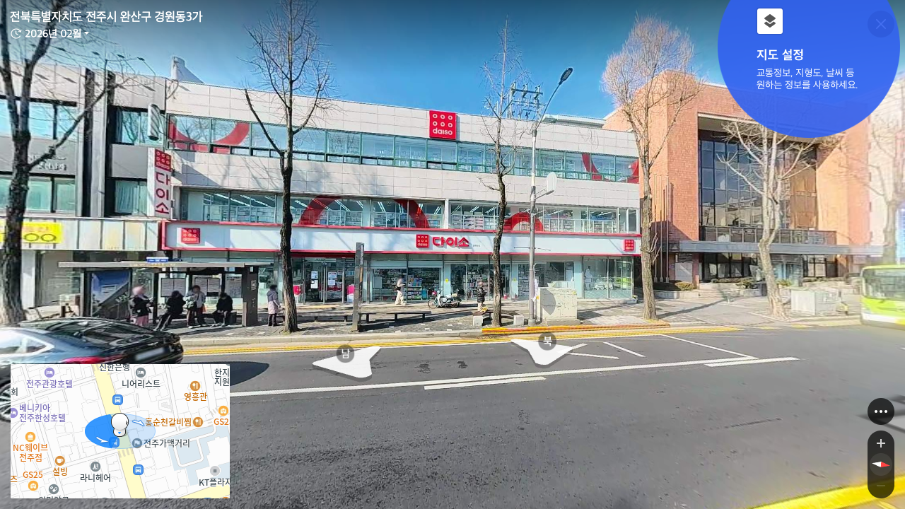

SITES › TRIP › REGION
지역을 고르면,
플레이북이 열립니다.
Presence Hub의 모든 트립 자료를 지역별로 묶었습니다. 가려는 지역을 선택하면 실제 거리뷰, CTM 근거, 추천 사이트와 목표 세팅을 바로 확인할 수 있습니다.
6Trip Playbooks한곳에서 지역 선택
TRIP REGIONS
지역 선택
각 지역의 독립 플레이북으로 이동합니다.

NOW · TOP 20 GYEONGNAM통영CTM 검증 + 신규 후보 20곳통영 플레이북 열기 → FULL PLAYBOOK GANGWON강릉·동해·삼척사이트 · 일정 · 운영 · 목표 · 셋업강릉권 플레이북 열기 →
CTM ARCHIVE GYEONGNAM거제고현권 중심 CTM 현장 후보거제 플레이북 열기 →
TOP SITES GWANGJU광주충장로 · 터미널 · 송정역 후보광주 플레이북 열기 →
TOP SITES YEOSU여수웅천 · 교동 · 엑스포 권역여수 플레이북 열기 →
TOP SITES JEONJU전주객사 · 전주역 · 신시가지 후보전주 플레이북 열기 →PERSONAL ACTION PLAN
이번 트립의 기준을
내가 먼저 정합니다.
강릉·동해·삼척에서 만들고 싶은 결과와 지키고 싶은 태도를 기록하세요. 입력한 내용은 이 기기에 자동 보관되고, 공용 연결 시 내 플래너로 동기화됩니다.
작성 준비 완료
TRIP REGIONS
지역 카테고리
공용 데이터 연결 중지역과 사이트를 Firebase에서 불러옵니다.
SHADE SHORTLIST
제주 필드 후보
별점은 유동 우선순위입니다.
아직 등록된 사이트가 없습니다.지역 카테고리를 선택하고 사이트를 추가해 주세요.